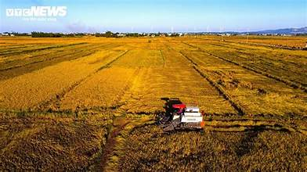
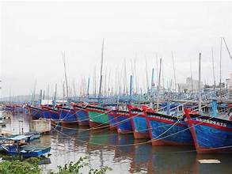
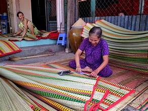
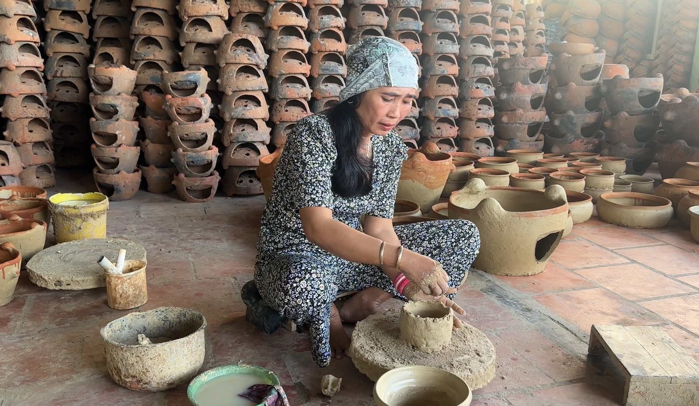
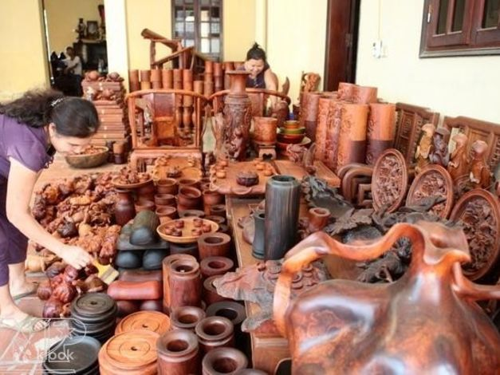

Bình Định là tỉnh thuộc vùng Duyên hải Nam Trung Bộ, có nền kinh tế phát triển theo hướng đa dạng, cân đối giữa nông nghiệp – công nghiệp – dịch vụ, gắn liền với điều kiện tự nhiên và truyền thống lao động của người dân địa phương. Trải qua quá trình hình thành và phát triển, Bình Định đã xây dựng được nhiều ngành nghề đặc trưng, vừa mang giá trị kinh tế, vừa đậm bản sắc văn hóa.
Nông nghiệp giữ vai trò quan trọng trong đời sống kinh tế của Bình Định, đặc biệt ở các huyện đồng bằng và trung du. Người dân nơi đây có truyền thống cần cù, chịu khó, gắn bó lâu đời với ruộng đồng. Các sản phẩm nông nghiệp chủ yếu gồm:Trồng lúa nước,Chăn nuôi gia súc, gia cầm. Nhiều vùng đã áp dụng khoa học kỹ thuật vào sản xuất, góp phần nâng cao năng suất và chất lượng nông sản.
Với đường bờ biển dài và nhiều đầm, vịnh, Bình Định có lợi thế lớn trong khai thác và nuôi trồng thủy sản. Nghề đánh bắt cá biển, làm nước mắm, chế biến hải sản khô đã tồn tại từ lâu đời, đặc biệt ở các vùng ven biển như Quy Nhơn, Phù Cát, Hoài Nhơn.
Kinh tế biển không chỉ mang lại nguồn thu nhập ổn định cho người dân mà còn góp phần hình thành nếp sống đặc trưng của cư dân miền biển Bình Định.
Những năm gần đây, công nghiệp và tiểu thủ công nghiệp của Bình Định có bước phát triển rõ rệt. Các khu công nghiệp, cụm công nghiệp được đầu tư, thu hút nhiều doanh nghiệp trong và ngoài tỉnh. Bên cạnh đó, các nghề thủ công truyền thống vẫn được gìn giữ và phát triển như:Dệt chiếu, Làm nón,Chế tác gỗ mỹ nghệ,Rèn, đúc thủ công Những nghề này vừa tạo việc làm, vừa góp phần bảo tồn giá trị văn hóa truyền thống.
  Du lịch đang dần trở thành ngành kinh tế mũi nhọn của Bình Định. Với nhiều danh lam thắng cảnh, di tích lịch sử và bãi biển đẹp, tỉnh thu hút ngày càng nhiều du khách trong và ngoài nước.
Các dịch vụ như lưu trú, ẩm thực, vận tải, hướng dẫn du lịch phát triển mạnh, tạo thêm nhiều cơ hội việc làm và góp phần nâng cao đời sống người dân.
Người Bình Định nổi tiếng với tinh thần lao động cần cù, sáng tạo và nghĩa tình. Dù làm nông nghiệp, biển cả hay công nghiệp – dịch vụ, họ luôn giữ được sự kiên trì, trách nhiệm và niềm tự hào với quê hương.